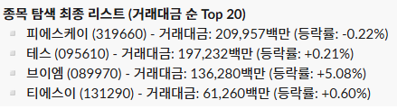
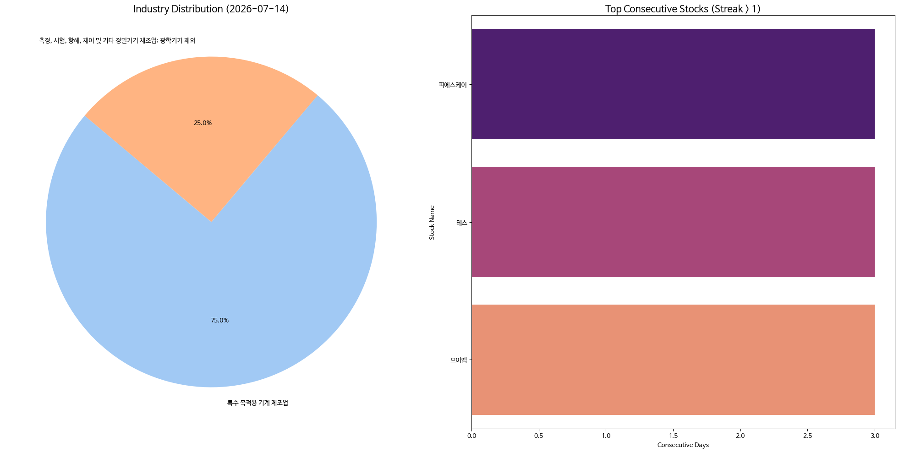

매일의 주도주 정리를 위해 기록합니다.
연속적으로 나온 종목들 또는 상승 후 조정받는 종목 위주로 리서치 해보시면 좋을 것 같습니다.

*오늘의 퀀트픽으로 '테스' 입니다.
(리서치를 진행했던 종목으로 세부 내용은 6월26일 리포트를 확인해 주세요)
▶ 테스의 2Q26E 영업이익은 271억(+33%; opm 23%)으로 컨센서스(255억원)을 소폭 상회할 전망
▶ 1Q26말 기준 수주잔고는 1,455억원으로 최근 5년 중 최대 수준
▶ BSD 장비의 DRAM향 양산 PO가 임박한 것으로 판단됨.
#주도섹터
반도체 메가 테크 및 디자인하우스
주요 종목: 삼성전자(+3.73%), SK하이닉스(+3.96%,), 가온칩스(+6.15%).
분석: 극단적인 개인 반대매매 물량이 출회된 가운데, 삼성전자와 SK하이닉스 투톱이 각각 +3.73%, +3.96% 강하게 반등하며 지수 반등의 핵심 축 역할을 해냈습니다. 가온칩스(+6.15%) 역시 전일 상한가 잔존 수급을 타며 AI 반도체 밸류체인 전반의 상방 복원력을 지지했습니다. 개인의 악성 매물을 기관과 외인이 차분하게 잠가버린 전형적인 숏커버링 국면입니다.
코스닥 핵심 전공정 소부장 바스켓
주요 종목: 브이엠(+5.08%), 티에스이(+0.60%), 테스(+16.68%), 피에스케이(-0.22%).
분석: 전일 역사적 폭락장 속에서도 독보적인 아웃퍼폼(테스 +10.3%, 브이엠 +3.0%)을 보이며 알파 수익률을 분출했던 동현님의 장비주 포트폴리오는 금일 대형주 반등에 따른 역로테이션 우려에도 매우 강력한 하방 견고함을 증명했습니다. 특히 브이엠은 +5.08%로 이틀 연속 우상향 탄력을 유지했고, 전일 10% 급등했던 테스(+0.21%)와 피에스케이(-0.22%) 역시 도합 4,000억 원에 이르는 거래대금을 완벽히 소화해 내며 전일 상승 마진을 보존했습니다.
개별 및 경기방어 테마
주요 종목: 모나미(+29.90% 상한가), 현대약품(+29.84% 상한가), 로킷헬스케어(+23.30%), 마녀공장(+4.04%).
분석: 코스닥 지수가 장중 -1.92% 추가 하락하며 중소형주 수급이 다소 위축되자, 지수 흐름과 무관한 개별 모멘텀 테마로 헷지성 자금이 기습 분출되었습니다. 애국 테마인 모나미가 가격제한폭까지 폭발했고, 낙태/피임 정책 테마의 현대약품이 상한가에 안착하며 시장 변동성을 회피하려는 개인 수급의 우회 통로가 되었습니다.
#조정섹터
저PBR 시클리컬 및 가치주 진영
주요 종목: 금호타이어(-8.66%), 미래에셋증권(-3.25%), 두산에너빌리티(-3.14%), 한화오션(-2.41%).
분석: 전일 대폭락장에서 상대적으로 선방했거나 헷지 역할을 충실히 이행했던 자동차 부품, 금융 및 중공업 가치주 진영은 금일 메가 테크와 개별 급등 테마로 유동성이 환류됨에 따라 일시적인 차익 매물 출회를 겪었습니다. 금호타이어(-8.66%)와 한화오션(-2.41%) 등의 낙폭이 두드러졌으며, 지수의 안정화에 따라 방어적 자산군에서 주도 테크 자산으로의 수급 교체가 이루어졌음을 시사합니다.

코스피 지수는 +0.73% 반등한 6,856으로 마감하며 6,800선 안착에 성공했습니다. 대형주 위주의 코스피 200 역시 +1.25% 상승하며 지수 하단을 탄탄하게 지지했습니다. 반면, 신용 반대매매 청산이 장 막판까지 이어진 코스닥 지수는 -1.92% 하락한 783로 주저앉으며 중소형주 진영의 양극화가 한층 심화되었습니다.
금일 시장의 핵심 분수령은 수급 주체의 완벽한 스위칭입니다. 개인 투자자는 무려 4조 1,424억 원에 달하는 대규모 순매도를 기록했습니다. 이는 전일 폭락에 따른 담보부족 마진콜 및 장 초반 기계적 반대매매 물량이 대거 쏟아진 결과입니다. 이 투매 물량을 기관이 3조 2,159억 원, 외국인이 9,523억 원의 순매수로 흔들림 없이 전량 흡수하여 시장의 바닥을 형성했습니다.
연속 종목으로 피에스케이(3회), 테스(3회), 브이엠(3회) 출현했습니다.
인고의 시간, 그래도 120일선은 지켰다
오늘은 삼성전자(+3.3%)와 SK하이닉스(+3.7%)가 동반 반등하며 코스피를 끌어올렸습니다. 장중 저점에서 고점까지 7.8%p를 오갈 만큼 변동성은 컸지만, 결국 120일선 부근(6,594p)에 안착하며 7월 들어 두 번째 양봉을 만들었습니다. 낮 12시경 미국 선물과 아시아 시장이 반등하자 닛케이와 함께 양전에 성공했습니다.
수급을 보면 오늘의 성격이 드러납니다. 전날까지 시장을 떠받치던 개인이 4.1조원어치를 투매했고, 그 물량을 외국인(+1조)과 기관(+3.2조)이 받았습니다. 외국인은 KRX와 NXT 합쳐 2조원가량을 순매수하며 6월 18일 이후 최대치를 기록했는데, 반도체 대형주에 집중됐습니다. 관건은 이 자금이 얼마나 이어지느냐입니다.
지수는 올랐지만 속을 보면 반도체가 홀로 떠받친 그림입니다. 상승 종목은 219개에 그쳤고, 시총 상위 10개 중 오른 건 삼성전자·하이닉스·삼성전기 정도였습니다. 특히 삼성전자는 미국 ADR 검토 소식에 시간외에서 5% 가까이 올랐고, 하이닉스는 52주 최대 거래량 속에 고저 14%p의 공방을 벌였습니다.
이번 급락의 성격에 대해서는 골드만삭스도 비슷한 진단을 내놨습니다. 하락을 키운 핵심은 지정학이 아니라 레버리지 단일종목 ETF의 강제 디레버리징이었다는 겁니다. 주가가 빠지면 ETF의 자동 헤지와 강제 매도가 연쇄적으로 나오고, 그게 다시 현물을 끌어내리는 악순환이 반복됐습니다. 반면 장기 기관은 매도에 동참하지 않았고 일부는 오히려 비중 확대 기회로 봤습니다. 기술적으로는 6,800선이 핵심 지지선인데, RSI가 이미 과매도에 근접해 단기 반등 여지도 있다는 평가입니다.
디레버리징이 어디까지 왔는지도 눈여겨볼 만합니다. 신용융자 잔액이 4월 하순 수준까지 줄며 지난 두 달간 늘린 레버리지를 사실상 반납했습니다. 동시에 공매도 잔액도 3개월 최저로 내려갔는데, 롱 청산과 숏 확대가 겹치는 악성 조합은 아니라는 뜻입니다. 추세 전환이라기보다 강세장 과정의 건강한 디레버리징에 가깝다는 해석이 나오는 이유입니다.
밸류에이션은 이미 극단입니다. 코스피 12개월 선행 PER은 5.78배로, 2003년 이후 하위 0.7% 구간입니다. 금융위기 때보다 낮습니다.
지금은 투매에 동참하기보다 관망하며 인고의 시간을 견디는 편이 낫습니다.
오늘 하루도 수고하셨습니다.